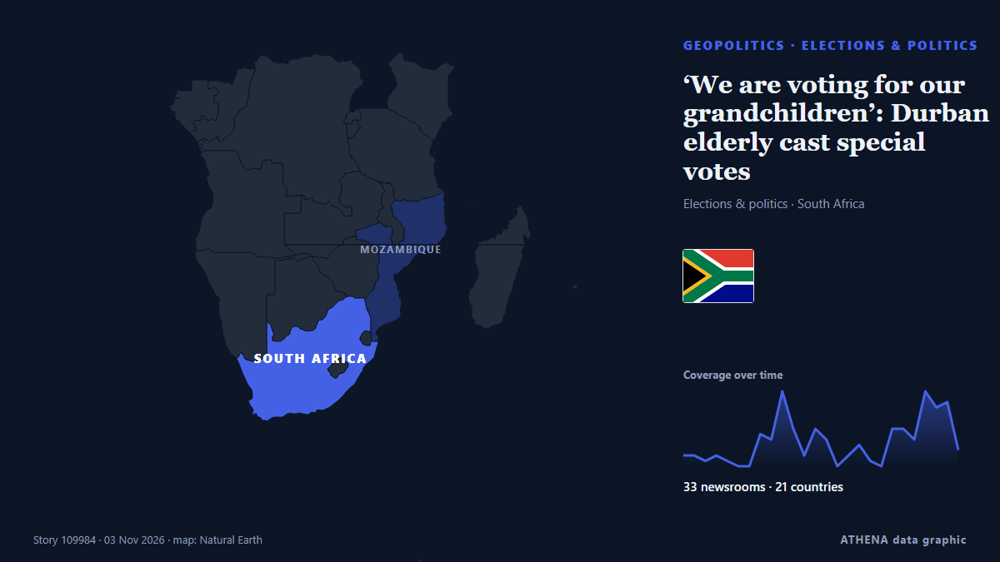

‘We are voting for our grandchildren’: Durban elderly cast special votes

Независимые источники: 33 издания в 21 стране, с 1 нояб.; первым сообщил City A.M.; освещение идёт на спад. ATHENA оценивает риск как умеренный (3.6/10), прежде всего из-за тяжести описываемого ущерба и географического и отраслевого охвата. Уверенность — 90 % (высокая); подтверждают независимые источники: 33 издания, средняя надёжность источников — 72 %. СМИ по странам: Южно-Африканская Республика (26), Великобритания (2), Мозамбик (2). Освещение: с 1 нояб. по 2 нояб., 22 ч.
Почему это важно: События в сфере безопасности и дипломатии могут менять союзы, торговлю и рынки далеко за пределами непосредственно затронутых стран.
Что изменилось: 68 новых сообщений от 23 редакций за 24 часа до 3 нояб..
Первый заголовок: LOCAL ELECTIONS 2026: What happens after the vote? Councils, coalitions and (maybe) controversies
Заголовки приводятся на английском языке, как они были опубликованы.
Коротко в цифрах
Отобрано, оценено и написано по опубликованной методологии ATHENA. Ни один редактор не вмешивается в отдельные события. Как это создаётся ›
| 01 Nov 13:05 UTC | 2 |
|---|---|
| 01 Nov 15:05 UTC | 2 |
| 01 Nov 17:05 UTC | 1 |
| 01 Nov 19:05 UTC | 2 |
| 01 Nov 21:05 UTC | 1 |
| 01 Nov 23:05 UTC | 0 |
| 02 Nov 01:05 UTC | 0 |
| 02 Nov 03:05 UTC | 6 |
| 02 Nov 05:05 UTC | 5 |
| 02 Nov 07:05 UTC | 14 |
| 02 Nov 09:05 UTC | 7 |
| 02 Nov 11:05 UTC | 2 |
| 02 Nov 13:05 UTC | 7 |
| 02 Nov 15:05 UTC | 5 |
| 02 Nov 17:05 UTC | 0 |
| 02 Nov 19:05 UTC | 2 |
| 02 Nov 21:05 UTC | 4 |
| 02 Nov 23:05 UTC | 1 |
| 03 Nov 01:05 UTC | 0 |
| 03 Nov 03:05 UTC | 7 |
| 03 Nov 05:05 UTC | 7 |
| 03 Nov 07:05 UTC | 5 |
| 03 Nov 09:05 UTC | 14 |
| 03 Nov 11:05 UTC | 11 |
| 03 Nov 13:05 UTC | 12 |
| 03 Nov 15:05 UTC | 3 |
| 03 Nov 11:00 UTC | 5.0 |
|---|---|
| 03 Nov 11:12 UTC | 4.2 |
| 03 Nov 15:50 UTC | 3.6 |
Откуда эти цифры
Значимость
Риск
Уверенность
Освещение — кто сообщил и когда
заголовок в оригинале · открывает источник- City A.M. · ВеликобританияTreasury minister: ‘I don’t think employers are working people’
- SABC News · Южно-Африканская РеспубликаGP legislature calls for higher police presence ahead of LGE
- Evening Standard (London) · ВеликобританияTreasury minister sparks fury after suggesting employers not ‘working people’
- The Hindu · ИндияSporadic clashes, rigging allegations mark urban local body polls in Kurnool, Nandyal and Anantapur districts
- The Jerusalem Post · ИзраильForeign interference suspicions don’t undermine election's integrity, CEC chief Sohlberg says
- SABC News · Южно-Африканская РеспубликаNATJOINTS on high alert ahead of local government elections
- Daily Maverick · Южно-Африканская РеспубликаLOCAL ELECTIONS 2026: What happens after the vote? Councils, coalitions and (maybe) controversies
- Novinite · БолгарияThe Bulgarian community in London has been actively voting since the morning
- IOL · Южно-Африканская Республика20 political-linked murders, 139 election crime cases recorded as South Africa heads to polls
- Premium Times · НигерияEDITORIAL: 2027: Voting candidates of popular choice, not by threats
- Club of Mozambique · МозамбикMozambique: 490 citizens deported from South Africa for illegal stay
- eNCA · Южно-Африканская РеспубликаNatJOINTS says security measures in place for safe elections
- SABC News · Южно-Африканская РеспубликаExtensive security measures vital to ensure peaceful polls: Analyst
- IOL · Южно-Африканская РеспубликаAI must serve South Africans, not leave them behind
- IOL · Южно-Африканская Республика‘You march, you commit a crime’: Police issue stern warning ahead of local government elections
- eNCA · Южно-Африканская РеспубликаPensioners vote as they lament water woes
- IOL · Южно-Африканская РеспубликаNATJOINTS warns protests on 4 November election day will be criminal
- IOL · Южно-Африканская РеспубликаElection 2026: Police warn protesters to end marches by midnight on Tuesday
- SABC News · Южно-Африканская РеспубликаMeasures in place to ensure free and fair polls in KZN: Premier Ntuli
- The Straits Times · СингапурSouth Africa's splintering vote sets up multi-party battle for cities
- eNCA · Южно-Африканская РеспубликаEkurhuleni pensioners endure 51 days of water woes as they cast special votes
- IOL · Южно-Африканская РеспубликаDurban Chamber at 170: what it told Ramaphosa about the Durban's deteriorating port
- IOL · Южно-Африканская РеспубликаNATJOINTS warning: Protests on election day will be a criminal offence
- IOL · Южно-Африканская Республика546 parties, 137,000 candidates and a troubled local government system: Ramaphosa warns of corruption
- RFI English · ФранцияMiami voters weigh local hardship and America's global role as early voting ends
- IOL · Южно-Африканская РеспубликаYOUTH VOICES: My vote on 4 November is a vote for economic change
- eNCA · Южно-Африканская РеспубликаReporter Diaries | Special voting under way in Knysna
- IOL · Южно-Африканская РеспубликаYOUTH VOICES: I can’t vote on 4 November, but my voice still counts
- IOL · Южно-Африканская РеспубликаKZN 2026 Elections: Premier Ntuli confident as Special Votes begin
- eNCA · Южно-Африканская РеспубликаElections 2026 | Police urged to focus on hotspots
- AllAfrica · AFRSouth Africa: Soldiers On Standby As Police Prepare for Election Violence
- AllAfrica · AFRSouth Africa: Record 2.6 Million Get Early Shot At Local Polls
- AllAfrica · AFRSouth Africa: R548-Billion Investment Plan Promises More Than 60,000 Jobs
- IOL · Южно-Африканская РеспубликаYOUTH VOICES: Why I am voting on 4 November: services, jobs and growth
- Club of Mozambique · МозамбикSouth Africa’s splintering vote sets up multi-party battle for cities
- AllAfrica · AFRSouth Africa: Rigging Claims, Xenophobia Raise Fears of Polling Station Tensions
- eNCA · Южно-Африканская РеспубликаElections 2026 | President Ramaphosa calls for peaceful polls
- IOL · Южно-Африканская РеспубликаYOUTH VOICES: Why I am voting: a South Africa where disability does not decide opportunity
- IOL · Южно-Африканская РеспубликаPolice monitor anti-foreigner tensions and election disinformation ahead of Wednesday’s vote
- IOL · Южно-Африканская РеспубликаYOUTH VOICES: Is my vote the key to a better future for South Africa's youth?